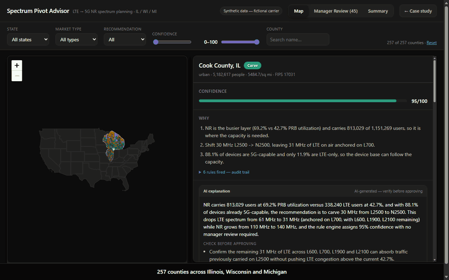
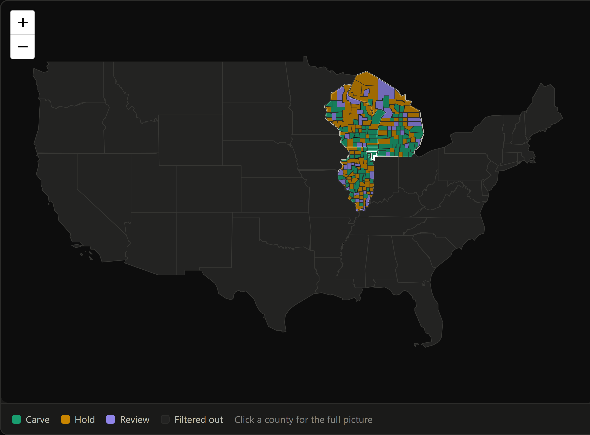
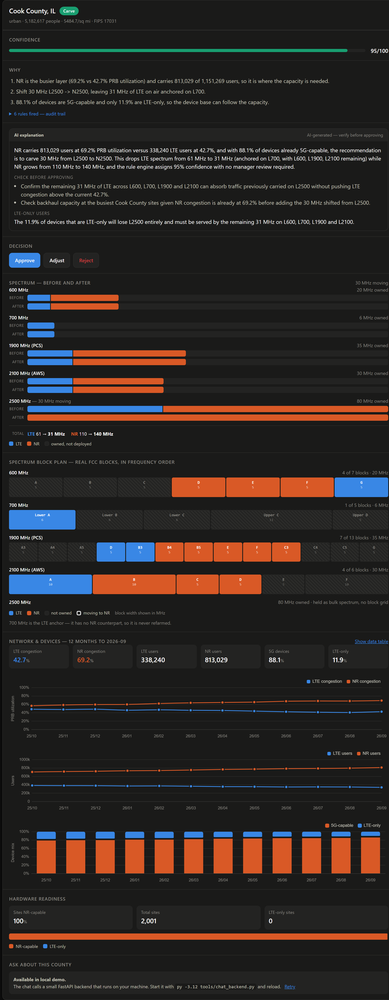
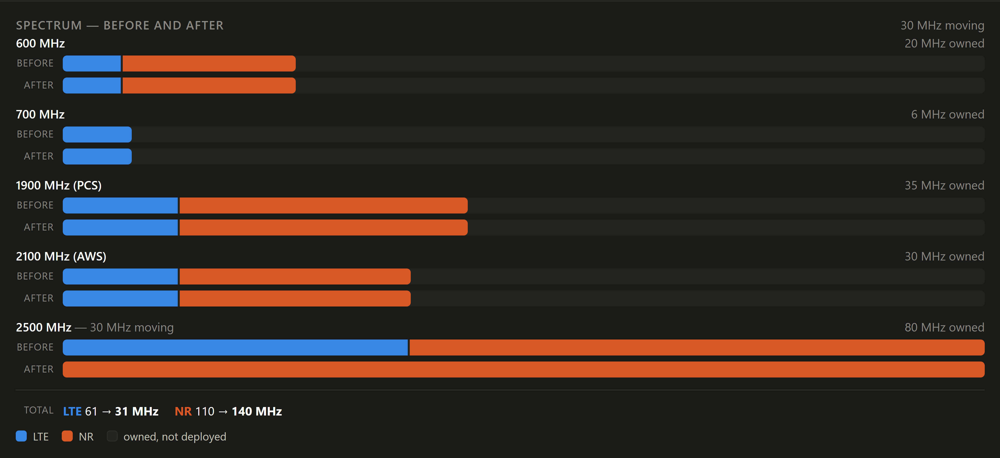
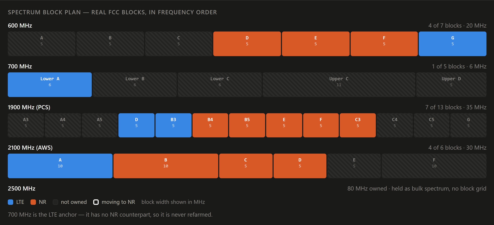
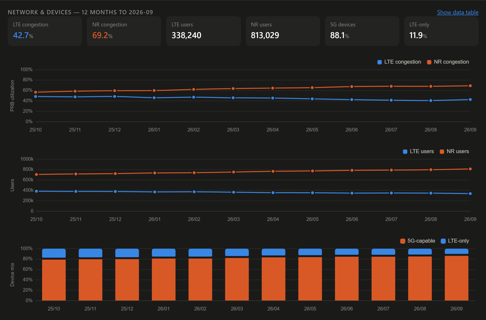
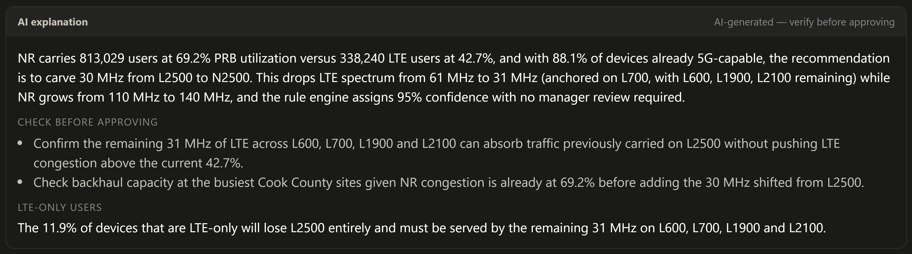
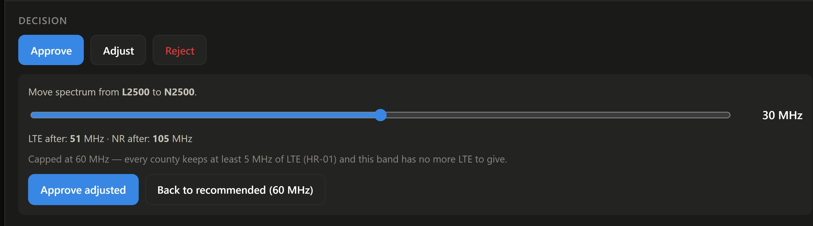
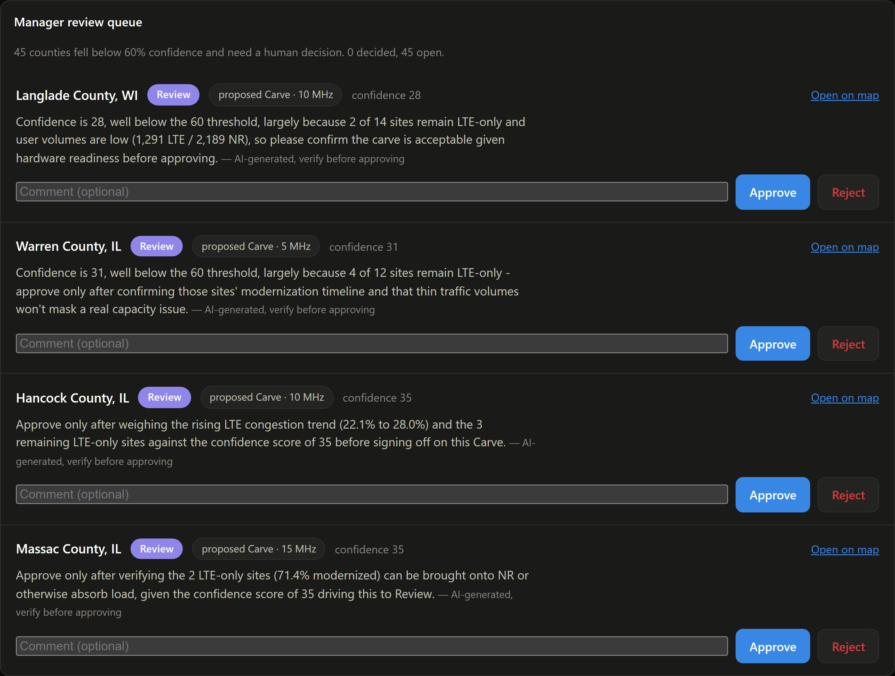
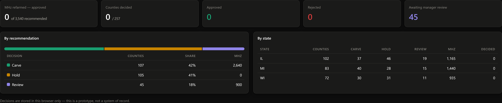

An AI-assisted tool that helps RF engineers decide when to move LTE spectrum to 5G, county by county -- by Richard Valino.
Map to county to decision, captured from the running prototype. Silent and looping — open the real thing to click through it yourself.

Over 18 years of RF planning and optimization experience in the telecom industry, I've watched spectrum decisions depend on stitching together three or four data sources by hand.
In my last role as data owner for a regional planning team, I automated pieces of this with Alteryx and Power BI, but the decision itself was still manual and hard to audit.
Method: 3 interviews with RF practitioners, plus my own experience planning spectrum refarms.
“The longest part is waiting for the Capacity team's feedback. Reconciling data from different sources comes second.”
Sr. Engineer, Systems Design — 9 years
“If the county is mostly LTE-only devices, we don't refarm for now.”
Engineer, Systems Design — 3 years
“If some sites are still LTE-only, we might leave 5 MHz on LTE.”
Sr. Engineer, Systems Design — 4 years
“If it's suggesting to refarm LTE when LTE has more users and is clearly congested, I wouldn't trust it.”
Sr. Engineer, Systems Design — 8 years
The biggest delay is waiting on another team, not the analysis.
Refarming isn't just congestion: hardware readiness, block contiguity, and anchor layers all shape the decision.
Engineers won't trust a recommendation without the “why,” and they reject anything that breaks basic planning logic.
LTE-only users are the risk everyone checks first.
Handoffs after approval run on email and Excel.
Goal — build a refarm plan that's fast and defensible.
Frustrations — waiting days for capacity feedback; reconciling performance, device, hardware, and spectrum data by hand.
Tools today — Alteryx, Excel, hardware readiness report, spectrum ownership and usage data, email.
Goal — approve plans quickly without missing a risk.
Frustrations — reviews happen fast, with little visibility into how the recommendation was reached.
Two stages dominate the calendar: waiting on the Capacity team, and building the plan by hand once the data finally arrives.
Three failure points and four handoffs. The tool can only remove the ones that are about information moving between people.
Every county shows its top three reasons in plain English and the exact rules that fired.
The rule engine makes the call, a person approves it, and the model only explains what was already decided.
The hard rules come from practice, not from a model: keep 5 MHz of LTE, keep an anchor, never break contiguity.
Below 60% confidence a county goes to a manager with the reasons it is uncertain, rather than through on its own.
Screens from the working prototype. Every number shown is synthetic data for a fictional carrier.
The national frame answers “where does this carrier operate” before anything else. Picking a state zooms to it; picking a county zooms again.

1 2Everything an engineer needs to decide a county, in the order they ask for it: what's recommended, how sure the engine is, why, and what changes.

Each band shows what is owned, what is on LTE, what is on NR, and what the recommendation changes.

Real FCC block designations at their real widths across 600, 700, PCS and AWS — so a 6 MHz Lower A and an 11 MHz Upper C are drawn differently, because they are different.

Congestion and users are two separate charts, never one plot with two scales — and the current figures are printed above them, so a tooltip is never the only way to read a value.

1 2
1 2
1 2
1 2
The split is enforced by structure, not by instruction. Explanations are written to a separate file and never read back into the recommendations. The chat endpoint has no write path. The MCP server exposes read-only tools, and a test asserts that no write tool is ever added.
That matters for two reasons the interviews made plain: engineers won't trust a recommendation they can't audit, and a tool that breaks basic planning logic gets dismissed entirely. A model that could quietly change a confidence score would put both at risk.
The model sees one county's data and nothing else, so a question about another county can't be answered from it — enforced by what it can see, not only by what it's told.
Every number in the output is checked against the numbers in the input. A failure names the offending figure and retries.
Every generated card carries “AI-generated — verify before approving”.
If an explanation is missing or fails validation, the screen shows the rule engine's own reasons instead. It never depends on the model being available.
The same data the engineer sees is exposed to an agent through four read-only
tools — get_county, list_review_queue,
get_state_summary, compare_counties — so a conversation
about the plan and the plan itself cannot drift apart. Asking “which Michigan counties
are waiting for manager review and why?” returns the same numbers, confidence scores
and rules that are on screen.
Early versions of the prompt sometimes rounded or restated numbers differently from the source data, so I added a validation step that checks every number against the input. I also found short, role-specific explanations read better than long ones.
Four assumptions I held going in turned out to be wrong, and each one changed how the layer is built. These are measured from the build across all 257 counties, not from user testing.
| What I expected | What I measured |
|---|---|
| A carefully worded prompt would stop internal jargon reaching the engineer. | It got to about 93%. Twenty-one of 257 counties still mentioned a rule ID or a raw field name. What closed the gap was making it a check that can fail and retry — not better wording. |
| Validating every number would catch the dangerous mistakes. | It catches invented figures, not wrong reasoning about figures. Asked which layers still carry LTE after a carve, the chat listed a band that the carve empties to zero — every number in the sentence was correct. The fix was to stop asking the model to infer it and supply the after-state directly. |
| “1–2 risks” in the prompt would produce 1–2 risks. | It produced three often enough to matter. Constraining the output schema fixed it across all 257 at once. |
| Asking for risks would produce useful risks. | The first version asked the engineer to confirm the engine's own bookkeeping. Naming what a real pre-approval check looks like — backhaul, site readiness, device migration — changed the output entirely. |
The Capacity team still reviews — but only the counties the tool flags, instead of every candidate.
Today, waiting for the Capacity team's feedback takes 3 days to a week, and our team takes about a week to finish the analysis and plan. Spectrum Pivot Advisor aims to put the first pass on one screen. This is based on my own experience; a usability test is the next step.
All network, device, hardware, and spectrum figures are generated. Only the Census county data is real.
“GLA - Mobile” does not exist. No real carrier's holdings or performance appear anywhere.
The recommendations come from encoded planning rules, not a learned model.
Four bands are modelled at block level; 2500 MHz is held as bulk spectrum with no block grid.
No engineer has used this under real conditions. Every outcome above is an estimate.